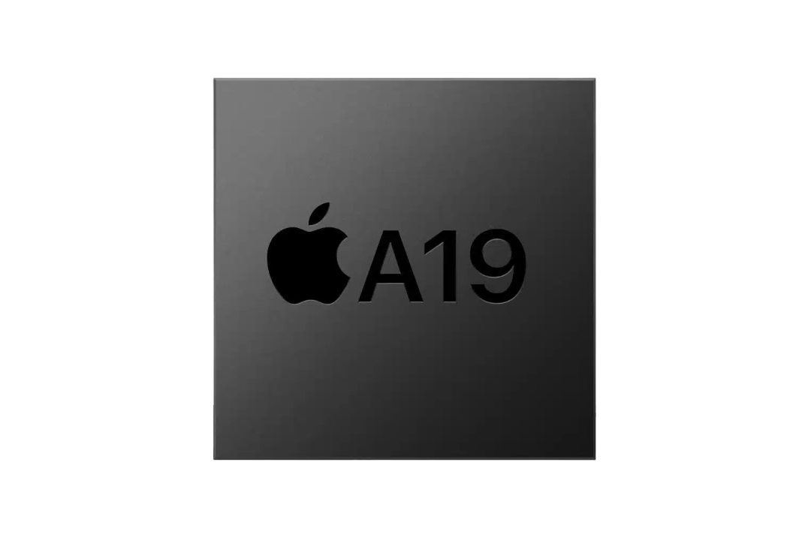

Apple A19
The Apple A19 and Apple A19 Pro are a pair of 64-bit ARM-based system on a chip (SoC) designed by Apple Inc.,
part of the Apple silicon series. The A19 is used in the iPhone 17,
while the A19 Pro is used in the iPhone 17 Pro, iPhone 17 Pro Max, and iPhone Air.
Both chips are manufactured by TSMC using the N3P variant of their 3 nm process node.
Announced on September 9, 2025, they are the successors to the Apple A18 and Apple A18 Pro processors, respectively.
Both the A19 and A19 Pro feature a 6-core CPU architecture with 2 performance cores and 4 efficiency cores,
operating at frequencies up to 4.26 GHz for performance cores and 2.60 GHz for efficiency cores.
The performance cores in the A19 feature 8MB of L2 cache, while the efficiency cores have 4MB.
The A19 features a 5-core Apple-designed GPU (80 execution units, 640 ALUs, 5 clusters) based on the new Apple10 architecture,
while the A19 Pro includes both 5-core and 6-core configurations depending on the device (96 execution units, 768 ALUs, 6 clusters).